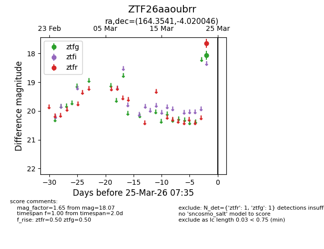
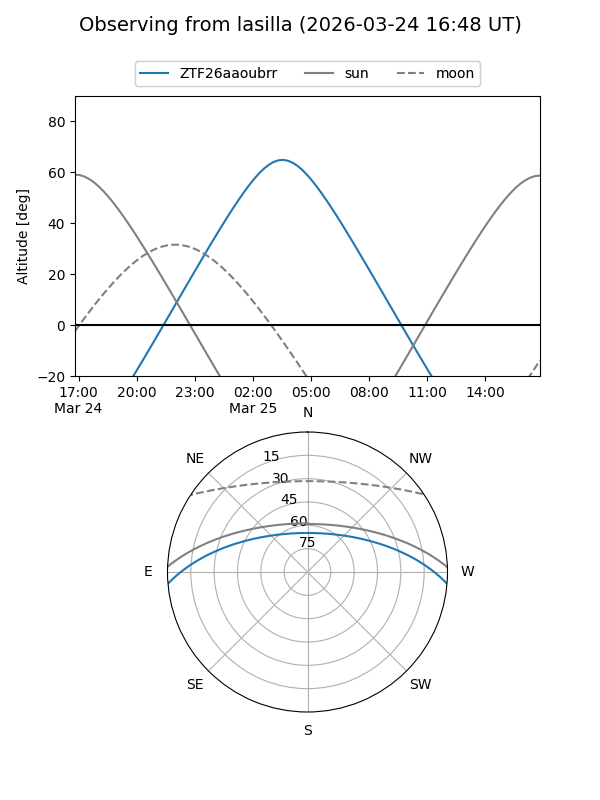
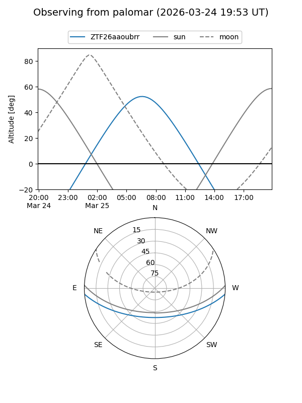

ZTF26aaoubrr
Target ZTF26aaoubrr at 2026-03-25 07:38
Aliases and brokers:
FINK: link
Lasair: link
ALeRCE: link
alt names
ZTF26aaoubrr (ztf,fink_ztf)
Coordinates:
equatorial (ra, dec) = 164.3541,-4.02005
equatorial (HMS+DMS) = 10:57:24.98,-04:01:12.17
galactic (l, b) = (257.0798,+48.43517)
Flags:
Photometry:
last ztfg=18.07, ztfr=17.64
1 ztfg, 1 ztfr detections
Lightcurve

Visibility


Additional plots